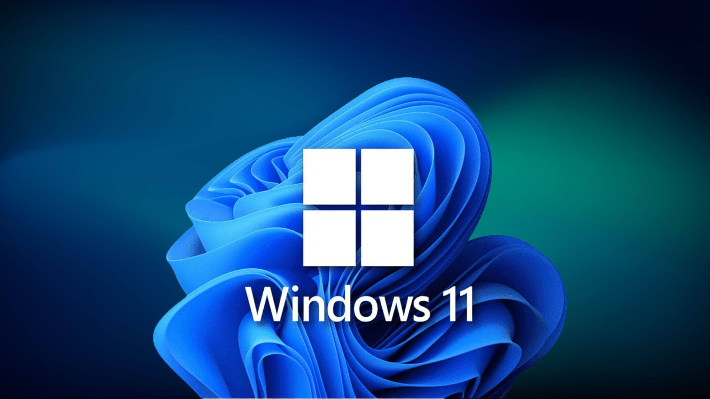
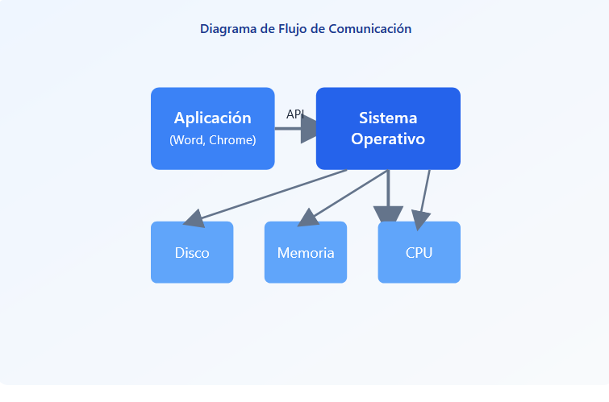

Sistemas Operativos Windows
Conceptos basicos y funcionamiento

Conceptos basicos y funcionamiento

Un sistema operativo (SO) es el software fundamental que gestiona los recursos de hardware y software de una computadora. Actúa como intermediario entre el usuario y el hardware, permitiendo que otros programas funcionen correctamente.
Computadoras
Smartphones
Tablets
Servidores
El sistema operativo funciona como un puente entre el hardware físico (componentes de la computadora) y el software (programas y aplicaciones). Esta arquitectura en capas permite que las aplicaciones no necesiten conocer los detalles técnicos del hardware.
Diagrama de Capas
Componentes físicos como CPU, memoria RAM, disco duro, tarjeta gráfica, teclado y mouse.
Programas y aplicaciones que el usuario utiliza, como navegadores, editores de texto y juegos.
El kernel o núcleo es la parte más importante del sistema operativo. Es el componente central que se ejecuta con privilegios especiales y tiene control total sobre todo el sistema. Actúa como el "cerebro" del sistema operativo.
Decide qué programas se ejecutan y cuándo, distribuyendo el tiempo del CPU.
Controla cómo se asigna y libera la memoria RAM para cada aplicación.
Comunica el sistema con hardware como impresoras, teclados y discos.
Organiza y gestiona cómo se almacenan los archivos en el disco.
Las aplicaciones no pueden acceder directamente al hardware por razones de seguridad. En su lugar, utilizan APIs (Application Programming Interfaces) que son funciones proporcionadas por el sistema operativo. Cuando una aplicación necesita realizar una tarea (como guardar un archivo o imprimir), llama a una API del sistema operativo.

Un proceso es un programa en ejecución. Cada vez que abres una aplicación (como Google Chrome o Spotify), el sistema operativo crea un proceso para ella. Un proceso incluye el código del programa, sus datos y los recursos que necesita (memoria, archivos abiertos, etc.).
La multitarea es la capacidad del sistema operativo de ejecutar múltiples procesos aparentemente al mismo tiempo. En realidad, el CPU cambia muy rápidamente entre procesos, dando la ilusión de que todos funcionan simultáneamente.
La memoria RAM (Random Access Memory) es la memoria de trabajo de la computadora. Es un espacio temporal y rápido donde se almacenan los programas y datos que estás usando activamente. Cuando apagas la computadora, todo lo que hay en la RAM se borra.
El sistema operativo decide qué aplicaciones pueden usar la RAM y cuánta cantidad. Asigna bloques de memoria a cada proceso y se asegura de que un programa no pueda acceder a la memoria de otro (por seguridad).
Cuando la RAM se llena, el sistema operativo usa una técnica llamada "memoria virtual". Mueve temporalmente datos menos usados de la RAM al disco duro, liberando espacio para aplicaciones activas. Aunque el disco es más lento, esto permite ejecutar más programas de los que cabrian en la RAM física.

Un archivo es una colección de datos almacenados con un nombre específico. Puede contener texto, imágenes, videos, programas, etc.
Una carpeta (o directorio) es un contenedor que organiza archivos y otras carpetas. Permite mantener los archivos organizados de forma jerárquica.
Los drivers o controladores son programas especiales que permiten al sistema operativo comunicarse con dispositivos de hardware. Cada tipo de hardware (impresora, mouse, tarjeta gráfica) necesita su propio driver para funcionar correctamente con Windows.
Cuando quieres usar un dispositivo, el sistema operativo usa el driver correspondiente para "traducir" las instrucciones. Por ejemplo, cuando mueves el mouse, el driver del mouse convierte ese movimiento físico en señales que Windows entiende.
palabras
palabras